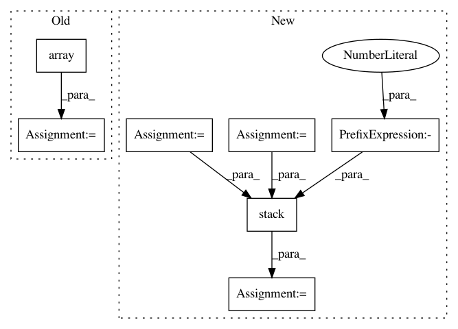

b82419f321b3b52841065e00d1f50945d7e8a2ee,nussl/separation/primitive/hpss.py,HPSS,run,#HPSS#,48
Before Change
// make a mask and return
harmonic_mask = np.array(harmonic_masks).transpose((1, 2, 0))
percussive_mask = np.array(percussive_masks).transpose((1, 2, 0))
both_masks = [harmonic_mask, percussive_mask]
self.masks = []
for mask in both_masks:
if self.mask_type == self.BINARY_MASK:
mask = np.round(mask)
mask_object = masks.BinaryMask(mask)
elif self.mask_type == self.SOFT_MASK:
mask_object = masks.SoftMask(mask)
else:
raise ValueError("Unknown mask type {self.mask_type}!")
self.masks.append(mask_object)
self.result_masks = self.masks
return self.masks
def _compute_spectrograms(self):
After Change
percussive_masks.append(percussive_mask)
// make a mask and return
harmonic_masks = np.stack(harmonic_masks, axis=-1)
percussive_masks = np.stack(percussive_masks, axis=-1)
_masks = np.stack([harmonic_masks, percussive_masks], axis=-1)
self.result_masks = []
for i in range(_masks.shape[-1]):
mask_data = _masks[..., i]
if self.mask_type == self.MASKS["binary"]:
mask_data = _masks[..., i] == np.max(_masks, axis=-1)
mask = self.mask_type(mask_data)
self.result_masks.append(mask)
return self.result_masks
In pattern: SUPERPATTERN
Frequency: 3
Non-data size: 7
Instances
Project Name: interactiveaudiolab/nussl
Commit Name: b82419f321b3b52841065e00d1f50945d7e8a2ee
Time: 2020-03-16
Author: prem@u.northwestern.edu
File Name: nussl/separation/primitive/hpss.py
Class Name: HPSS
Method Name: run
Project Name: geomstats/geomstats
Commit Name: 6f52d73623e0f7480061756fbe6e784c4b9854e6
Time: 2020-04-25
Author: nicolas.guigui@inria.fr
File Name: geomstats/geometry/beta_distributions.py
Class Name: BetaMetric
Method Name: inner_product_matrix
Project Name: geomstats/geomstats
Commit Name: 109f18b6bce4b72299f6b9aa4cc94bab2d283190
Time: 2020-04-25
Author: nicolas.guigui@inria.fr
File Name: geomstats/geometry/beta_distributions.py
Class Name: BetaMetric
Method Name: christoffels